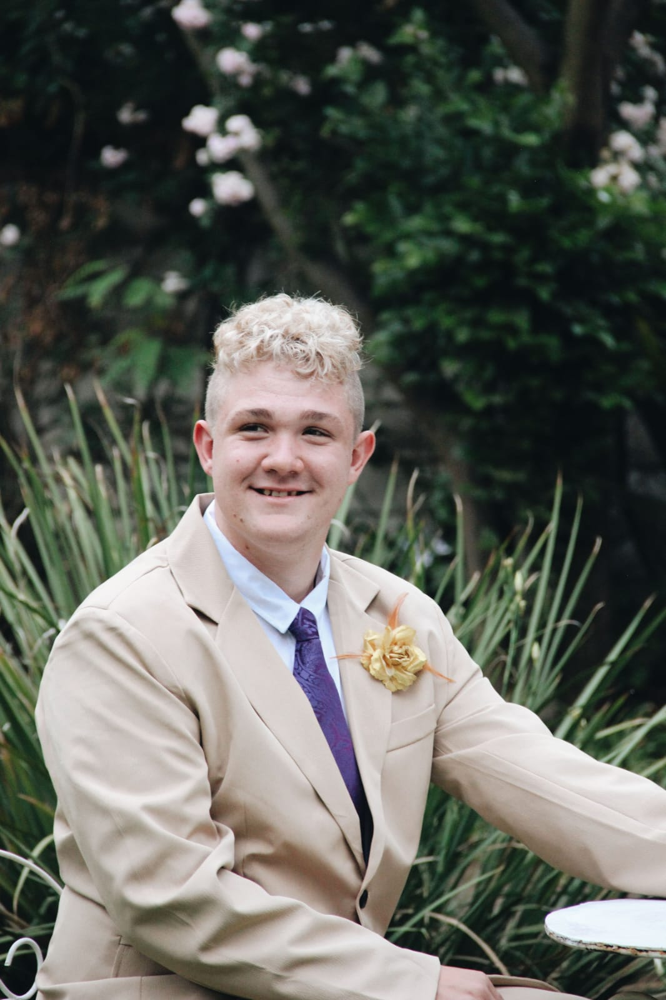

Ruan Hattingh
Software Developer
I’m a passionate software developer who sees coding as both a technical challenge and a creative craft. I enjoy transforming ideas into functional, elegant solutions, and I’m always motivated to learn new technologies and improve my skills. For me, programming is more than just writing code — it’s about solving problems, building meaningful projects, and continuously growing as a developer. I'm currently studying at Zaio Institute of Technology to get my diploma in Software Development, and I’m eager to apply what I’ve learned in real-world.
Why Hire Me?
What sets me apart is my passion for coding and my dedication to continuous growth. I don’t just complete tasks — I strive to understand problems deeply and solve them in efficient and creative ways. I am committed to improving every day, learning new skills, and building software that is both functional and meaningful. When given an opportunity, I bring energy, focus, and a strong work ethic to every project.
Testimonials
Loading testimonials...
Skills
- JavaScript
- Python
- HTML
- CSS
- Git & GitHub
- SQL
Hobbies
- Cycling
- Hiking
- Photography
Interests
- Web Development
- Open Source
- Technology